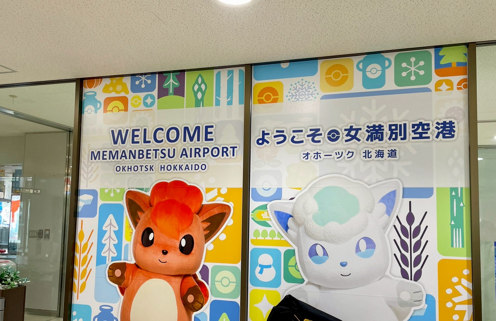
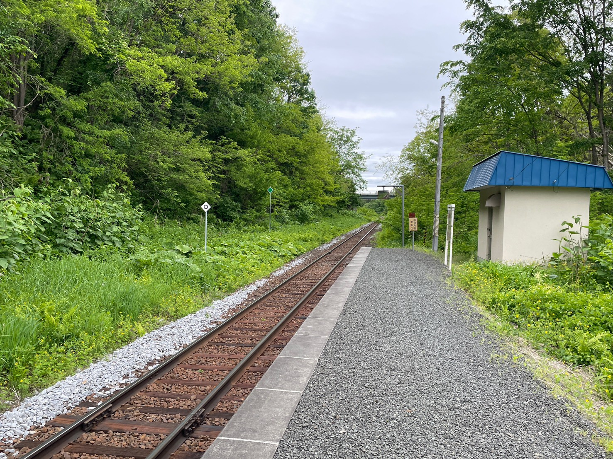
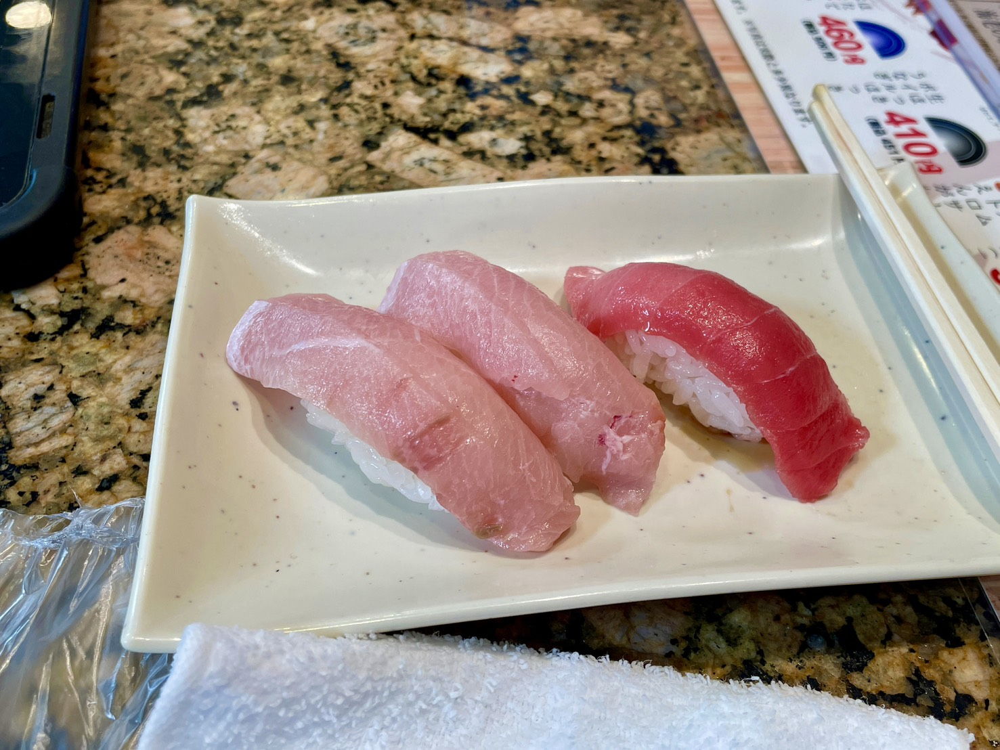
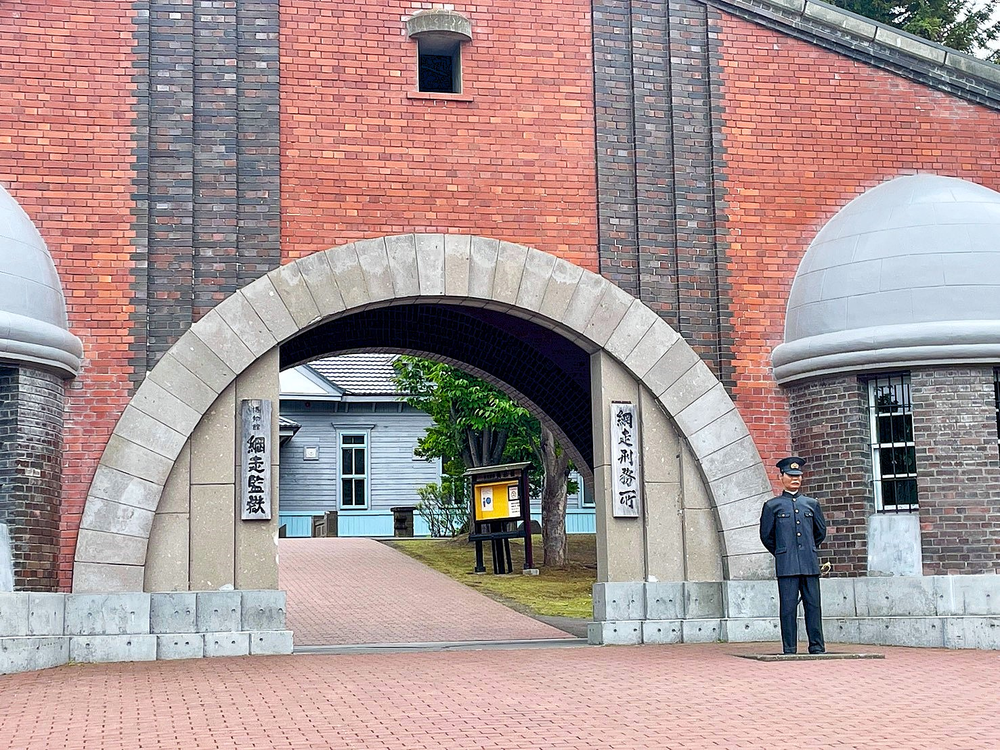
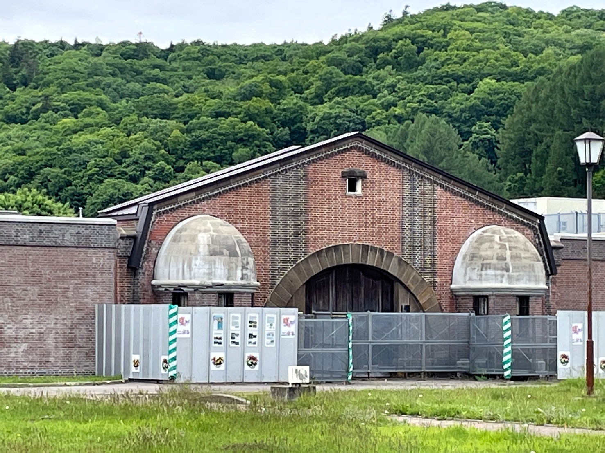

北海道旅行2026 Part1
2026/07/09更新
2年ぶりの北海道に行ってきた.場所は網走~阿寒~釧路.
スタートは女満別空港.ポケモンに迎えられながら...
なぜポケモンなのかわからないけどおそらくこれ...
コラボ仕様の女満別空港 - 北見経済新聞

最初に向かったのは西女満別駅.この見た目で空港最寄り駅. 徒歩20分で女満別空港に着く.そこまでハードじゃないけど熊出そう.

お昼ご飯は「ビッグ・サン」というお店で寿司.
ファミリー回転寿司 ビッグ・サン｜網走市観光公式サイト「おいしいまち網走」
ファミリー向けのお店ではあるらしいけど東京の寿司とレベルが違う. 北海道は食の標準レベルが高いのだろう.これは美味しかった(*´Д｀)

午後は博物館の網走監獄へ.結構広くて驚いた.しっかり周れば2,3時間は経ちそう.
博物館 網走監獄 公式サイト

そしてその後,我々は現役の網走刑務所にも足を運んだ.
網走刑務所｜網走市観光公式サイト「おいしいまち網走」
ここでは現役の刑務官と普段どんな仕事内容を行っているかなど1対1での対談を...
とそんなことできるわけがないので大人しく入口の写真を撮る.

そして受刑者が刑務作業で作成した家具などを売っている「刑務所作業製品展示場」へ. ここがまた面白い.家具などどれもかなり高クオリティで「ニトリかよ!!」と突っ込みたくなる. (写真は撮り忘れ)
今回はこの辺で.Part2へ続く...
初個人サイト(仮)
2026/05/22更新
なんだかんだで個人サイトを作ってみようと思い...
HTMLもCSSも学生以来ほとんど書いてなかったけどとりあえず適当に作成.久しぶりに書いた.
でもなんというかレイアウトとデザインにめっちゃ時間使ったんだよね...
で考えた挙句,結局自分でもあんまり満足していない構成になった()
またいつか修正するかもしれない.
でもHTMLはネットの資料豊富過ぎる.それはありがたい.書くのは慣れちゃえば結構簡単.
今回はそれだけ.ここでは日記というかブログというかなんか出来事系を載せていこうと思う.
趣味系とか備忘録とかはMiscにまとめていくよ.
やっぱり何もないのもあれなんで最近と言うか年始というか家の近くのセブンに導入された紅茶マシンの紅茶を...
セブンの紅茶,思った以上にクオリティ高くてびっくり.ちなみにスコーンは自作.
紅茶にはスコーンが一番合うと思う.甘すぎなくバターの香りが紅茶と合うと思う.

それではまた...
ちなみに(仮)と書いたのはサーバ移動するかもしれないから.(GitHub Pagesは色々と制約が...)
良いのないかな.いつか探す誰かオヌヌメ教えてクレメンス()